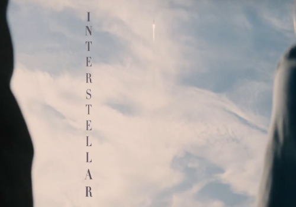
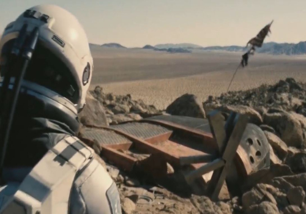

-

- 
- 

ARGUMENTO
A mediados del siglo XXI, la destrucción de las cosechas en la
Tierra ha hecho que la agricultura sea cada vez más difícil y se vea
amenazada la supervivencia de la humanidad.
Joseph Cooper, viudo, exingeniero y piloto de la NASA, dirige
una granja con su suegro Donald, su hijo Tom y su hija Murph, quien
cree que su habitación está embrujada por un poltergeist.
Cuando
aparecen inexplicablemente extraños patrones de polvo en el suelo de
la habitación de Murph, Cooper se da cuenta de que la gravedad está
detrás de su formación, no un "fantasma". Interpreta el
patrón como un conjunto de coordenadas geográficas formadas en
código binario. Cooper y Murph siguen las coordenadas a una
instalación secreta de la NASA, donde se encuentran con el
exprofesor de Cooper, el doctor Brand.
Brand revela que, misteriosamente, un agujero de gusano apareció cerca de Saturno hace 48 años, abriendo un camino a una galaxia distante con algunos planetas potencialmente habitables. Bajo su dirección, doce voluntarios viajaron a través del agujero para evaluar la idoneidad de cada planeta como nuevo hogar de la humanidad. Los voluntarios Miller, Edmunds y Mann enviaron datos alentadores de planetas cerca de un agujero negro supermasivo llamado Gargantúa. Brand recluta a Cooper para pilotar la nave espacial Endurance con el fin de investigar más, mientras trabaja en el "Plan A", una teoría gravitatoria de la propulsión que permitiría el éxodo desde la Tierra a esos nuevos planetas.